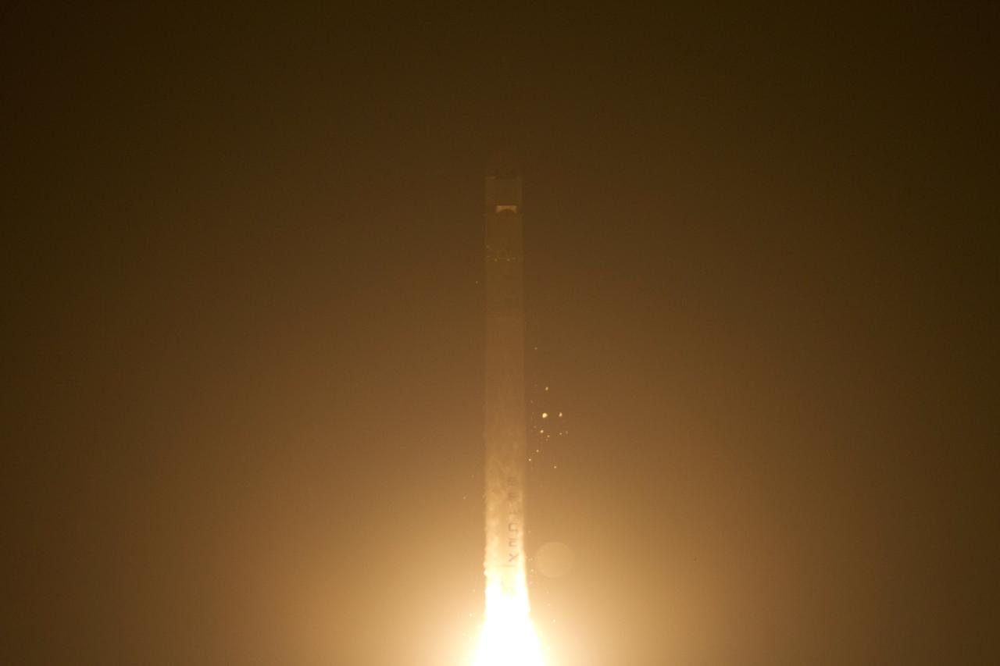
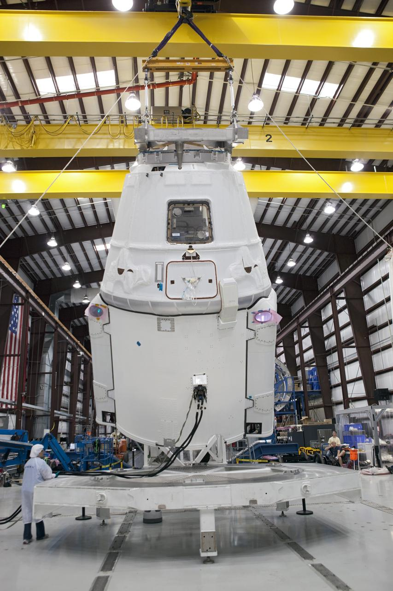
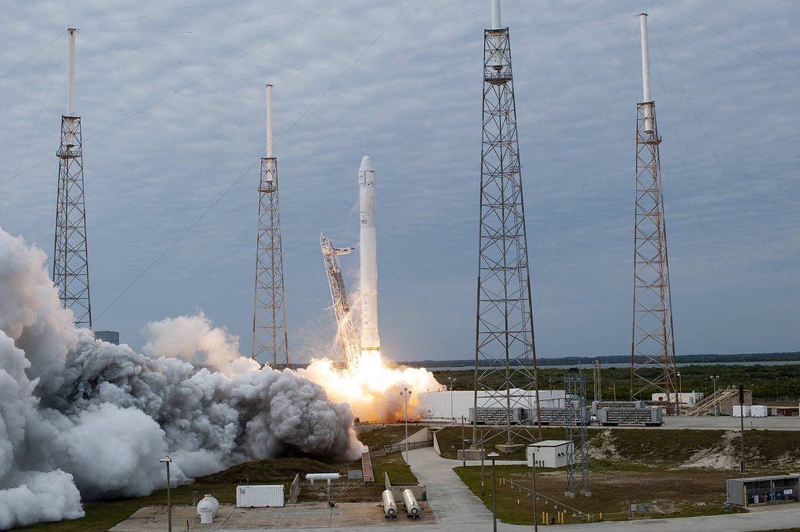
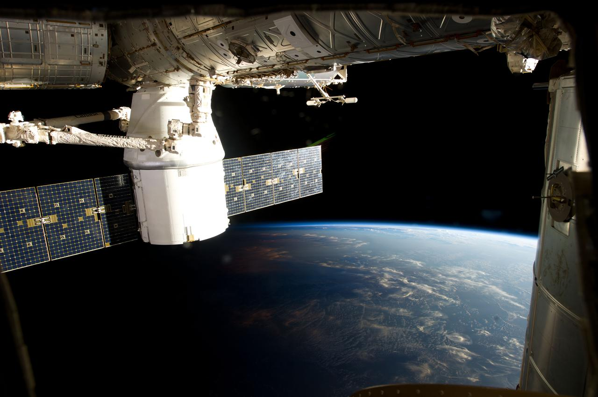

Storia SpaceX · Sesta parte · 2012–2013
Dalla dimostrazione al servizio: le prime missioni CRS
CRS-1 e CRS-2 inaugurano il rifornimento operativo di SpaceX alla Stazione Spaziale Internazionale. Le due missioni completano il servizio NASA affrontando anomalie differenti, durante l’ascesa e nel volo orbitale di Dragon.
Indice Storia SpaceXDal programma di sviluppo al contratto operativo
Nel maggio 2012 Dragon aveva raggiunto la Stazione Spaziale Internazionale, era stata catturata dal Canadarm2 e aveva riportato a Terra il carico previsto. C2+ concludeva le dimostrazioni di SpaceX per il programma Commercial Orbital Transportation Services. Il passo successivo era l'esecuzione del contratto Commercial Resupply Services: trasportare materiali utili all'equipaggio e alla ricerca, rispettare i requisiti della Stazione e recuperare quanto doveva tornare nei laboratori terrestri. La distinzione riguarda la natura del rapporto con NASA. COTS aveva sostenuto lo sviluppo attraverso accordi con obiettivi intermedi; CRS acquistava un servizio di trasporto. [1]
Il contratto assegnato a SpaceX nel dicembre 2008 prevedeva inizialmente dodici missioni, per un valore di 1,6 miliardi di dollari. Nell'ottobre 2012 iniziava la prima. Dopo il ritiro dello Shuttle, Dragon introduceva nella logistica americana una capacità particolarmente utile: il ritorno di quantità consistenti di materiale. La disponibilità di una capsula recuperabile permetteva di programmare analisi a Terra, riportare apparecchiature e organizzare la restituzione dei campioni. Per valutare questa fase della storia SpaceX occorre quindi seguire il ciclo completo del trasporto, dal carico in Florida alla consegna dopo l'ammaraggio. [2]
CRS-1: il lancio e la perdita di un motore
Falcon 9 decollò da SLC-40, a Cape Canaveral, alle 20:35 EDT del 7 ottobre 2012. In UTC erano le 00:35 dell'8 ottobre: le due date presenti nelle cronologie identificano lo stesso lancio. Era il quarto volo del Falcon 9, nella configurazione originaria oggi indicata come v1.0. Dragon doveva raggiungere l'ISS per la prima missione operativa del contratto CRS. La finestra di lancio era istantanea, una condizione legata alla geometria necessaria per inserire il veicolo sul percorso verso la Stazione. Il calendario dipendeva quindi anche dalle condizioni del sito e dalla disponibilità del sistema nel momento stabilito. [3]
Durante l'ascesa uno dei nove motori del primo stadio si spense in seguito a un guasto. Il rapporto dell'Inspector General NASA colloca l'evento circa 79 secondi dopo il decollo. Il lanciatore proseguì e Dragon raggiunse l'orbita prevista per la missione. Era una dimostrazione in volo della capacità di continuare dopo la perdita di un motore, ma il guasto richiedeva comunque un'indagine. SpaceX consegnò a NASA un rapporto nel febbraio 2013; per CRS-2 furono impiegati motori sottoposti a ispezioni approfondite. Il documento pubblico permette di descrivere questi fatti, senza attribuire una causa dettagliata che non espone. [4]
La ridondanza della propulsione va letta insieme al profilo di missione. Quando viene meno un motore, cambiano la spinta disponibile e l'evoluzione della traiettoria; il sistema deve conservare margini sufficienti per completare l'inserimento orbitale. La sopravvivenza del carico principale dimostra che, in quel volo, tali margini erano adeguati. Da un singolo episodio non si può ricavare la capacità di tollerare qualsiasi avaria, in qualsiasi istante dell'ascesa. È una distinzione necessaria per descrivere una prestazione tecnica senza trasformarla in una garanzia generale.

Il risultato diverso del satellite Orbcomm
CRS-1 trasportava anche un prototipo della costellazione Orbcomm OG2, con il ruolo di carico secondario. Il programma prevedeva un'ulteriore accensione del secondo stadio per raggiungere l'orbita richiesta dal satellite. Dopo l'avaria al primo stadio, la verifica del propellente residuo non consentì di procedere con quella manovra secondo i criteri di sicurezza adottati per la missione diretta all'ISS. Il satellite venne rilasciato in un'orbita più bassa di quella prevista. La ricostruzione contemporanea della sequenza, conservata fra i documenti NASA dedicati ai lanciatori, descrive questo vincolo operativo. [5]
Orbcomm non riuscì a completare la missione prevista. Nella documentazione finanziaria depositata presso la Securities and Exchange Commission, la società registrò la perdita del prototipo e la conseguente svalutazione. Il risultato del lancio richiede dunque due giudizi distinti: Dragon raggiunse l'orbita utile al rifornimento della Stazione; il satellite secondario non raggiunse quella necessaria al proprio impiego. Definire l'intera operazione un successo senza qualificazioni cancellerebbe una perdita reale per un altro cliente. Definirla un fallimento completo cancellerebbe invece il servizio effettivamente svolto per NASA. [6]
Questa differenza chiarisce un problema del trasporto condiviso. Due carichi sullo stesso razzo possono avere priorità, orbite e criteri di completamento differenti. La presenza di un passeggero secondario richiede una pianificazione compatibile con la missione principale, comprese le condizioni in cui una manovra aggiuntiva deve essere rinunciata. Nel caso di CRS-1 il punto rilevante è la separazione fra capacità del lanciatore di salvare Dragon e possibilità di soddisfare anche il profilo Orbcomm. La seconda non seguì automaticamente dalla prima.
La consegna alla Stazione
Il 10 ottobre Dragon raggiunse l'ISS. Il Canadarm2, utilizzato dall'equipaggio di Expedition 33, catturò la capsula, che fu poi installata sul modulo Harmony. La terminologia merita precisione: Dragon di prima generazione effettuava un avvicinamento autonomo fino al punto di cattura, seguito da grapple e berthing mediante il braccio robotico. Non eseguiva il docking autonomo che sarebbe diventato una caratteristica di Dragon 2. Il trasferimento del veicolo dal volo libero al collegamento con la Stazione prevedeva quindi una fase di operazioni robotiche e una successiva verifica delle condizioni per accedere al vano pressurizzato. [7][8]
Il manifesto aggiornato di CRS-1 indicava circa 400 chilogrammi di carico in salita, 454 includendo gli imballaggi. La differenza è utile per leggere correttamente i dati: la massa delle merci non coincide con la massa della capsula e non comprende necessariamente tutti gli elementi necessari a trasportarle. Nel ritorno erano previsti circa 759 chilogrammi di materiali, 905 con gli imballaggi. Presentare questi valori senza specificare la convenzione adottata produce confronti fuorvianti, soprattutto quando si affiancano comunicati, manifesti e capacità nominali del veicolo. [8]
Un rifornimento comprende attività che rimangono poco visibili nelle immagini del lancio. I materiali devono essere identificati, fissati, recuperabili dall'equipaggio e compatibili con l'ambiente interno della Stazione. Dopo lo scarico, il volume disponibile va organizzato per il ritorno. I campioni richiedono condizioni di conservazione adeguate; le apparecchiature devono viaggiare in una configurazione che permetta la successiva analisi. La qualità del servizio dipende anche da queste operazioni. Il razzo consegna il veicolo in orbita, ma il trasporto si completa attraverso una sequenza di lavorazioni e controlli.

Il ritorno di CRS-1
Dragon ammarò nel Pacifico il 28 ottobre 2012 alle 19:22 UTC, a ovest della Baja California. NASA comunicò il ritorno di 1.673 libbre di carico, circa 759 chilogrammi. Una parte dei materiali, compreso un congelatore GLACIER con campioni scientifici, doveva essere riconsegnata all'agenzia entro 48 ore dall'arrivo al porto californiano. La capsula sarebbe poi proseguita verso l'impianto SpaceX di McGregor, in Texas, per le attività successive al volo. La missione aveva portato rifornimenti all'ISS e restituito a Terra campioni e hardware. [9]
Il recupero della capsula e la restituzione del carico sono due operazioni collegate, con criteri differenti. Per la prima contano l'integrità del veicolo e la possibilità di recuperarlo dal mare. Per la seconda contano anche tempi, temperatura e condizioni dei materiali trasportati. Un campione scientifico conserva la propria utilità soltanto se la catena di conservazione soddisfa i requisiti dell'esperimento. È per questo che il comunicato di fine missione specificava una consegna rapida di determinati materiali: il servizio comprendeva un tratto terrestre organizzato dopo il rientro.
CRS-2: una nuova anomalia dopo l'inserimento orbitale
La seconda missione operativa partì da SLC-40 il 1° marzo 2013 alle 15:10 UTC, le 10:10 EST in Florida. Era il quinto lancio del Falcon 9 e l'ultimo della versione v1.0. Dragon compiva il quarto volo della propria storia e il terzo viaggio verso l'ISS, dopo C2+ e CRS-1. Il conteggio distingue i voli della capsula dalle visite alla Stazione: COTS-1, nel dicembre 2010, aveva verificato orbita e rientro senza raggiungere il complesso orbitale. La sequenza rende evidente quanto fosse ancora limitata l'esperienza disponibile all'inizio del servizio commerciale. [10][11]
Dopo la separazione dal secondo stadio, tre dei quattro gruppi di propulsori di Dragon risultarono indisponibili. Anche il dispiegamento dei pannelli solari venne ritardato. Secondo il comunicato NASA, i tecnici SpaceX lavorarono per liberare valvole bloccate e riportare in funzione i gruppi. I pannelli furono aperti circa novanta minuti dopo il lancio; entro le 15:00 EST tutti e quattro i gruppi erano operativi e il controllo dell'assetto era stato recuperato. La capsula era già in orbita, ma doveva ristabilire le condizioni necessarie a proseguire verso un avvicinamento autorizzato. [12]
Il caso riguarda una fase diversa rispetto all'avaria di CRS-1. Il lanciatore aveva completato l'inserimento orbitale di Dragon; l'anomalia interessava il veicolo che doveva manovrare nello spazio. Il controllo dell'assetto determina l'orientamento della capsula, mentre le manovre orbitali regolano il percorso verso l'obiettivo. Una missione di rendezvous richiede entrambi. La disponibilità dei propulsori è particolarmente importante nelle vicinanze di una struttura abitata, dove devono essere possibili arresto dell'avvicinamento e allontanamento in condizioni definite. Recuperare una funzione a distanza dalla Stazione precede la verifica del suo impiego nelle operazioni ravvicinate.

Verifiche, cattura e permanenza
NASA autorizzò Dragon ad avvicinarsi dopo una serie di verifiche. L'arrivo venne spostato di un giorno rispetto al programma iniziale. Il 3 marzo Kevin Ford e Tom Marshburn catturarono la capsula con il Canadarm2 alle 10:31 UTC; il berthing sul portello di Harmony rivolto verso la Terra fu completato alle 13:56 UTC. L'anomalia era stata gestita senza perdere il veicolo e senza interrompere il servizio, ma aveva modificato la sequenza operativa. La riattivazione dei propulsori precedette quindi l'autorizzazione all'arrivo. [12]
La permanenza di un cargo collegato all'ISS introduce inoltre requisiti di integrazione ambientale. Il vano accessibile dall'equipaggio deve rispettare condizioni compatibili con la vita e il lavoro a bordo. Un documento tecnico NASA sull'integrazione dei veicoli commerciali descrive, fra gli aspetti da verificare, atmosfera interna, circolazione dell'aria, rilevazione e soppressione degli incendi. Questi controlli riguardano il periodo in cui il veicolo diventa uno spazio utilizzabile dalla Stazione. La compatibilità deve essere stabilita prima di aprire il collegamento e trasferire i materiali: il trasporto commerciale entra così nelle procedure di una struttura abitata, con vincoli che proseguono durante lo scarico e la preparazione del ritorno. [15]
La ricerca che torna a Terra
CRS-2 trasportava circa 575 chilogrammi di rifornimenti e attività scientifiche secondo il comunicato NASA di fine missione. Al ritorno la massa dichiarata era circa 1.210 chilogrammi, comprendenti campioni, apparecchiature e materiali di attività educative. Fra gli esperimenti rientrati figurava Coarsening in Solid-Liquid Mixtures-3, dedicato ai processi di formazione e crescita delle strutture dendritiche nelle leghe metalliche. Tornavano inoltre campioni legati allo studio degli effetti della permanenza prolungata nello spazio sul corpo umano. Il rientro consentiva ai ricercatori di esaminare direttamente materiali prodotti o utilizzati in microgravità. [13]
La missione terminò il 26 marzo con l'ammaraggio nel Pacifico alle 16:36 UTC, corrispondenti alle 12:36 EDT. Anche in questo caso NASA prevedeva la restituzione rapida di una parte del carico dopo l'arrivo al porto, mentre la capsula sarebbe stata trasferita a McGregor. La data effettiva va distinta dal 25 marzo indicato nel precedente comunicato sull'arrivo all'ISS, che riportava ancora il programma allora previsto. Nella ricostruzione di una missione, gli annunci preliminari descrivono le intenzioni; i resoconti conclusivi documentano quanto è avvenuto. [13]

Il servizio avviato e il cambio di configurazione
Fra ottobre 2012 e marzo 2013 SpaceX completò due rifornimenti operativi e due ritorni di carico. In entrambi i voli dovette gestire anomalie: durante l'ascesa per CRS-1, dopo l'inserimento orbitale per CRS-2. Le conseguenze furono diverse: perdita del carico secondario nel primo caso, ritardo nell'arrivo della capsula nel secondo. Il risultato comune fu la consegna del servizio NASA. L'esperienza accumulata comprendeva anche ispezioni, decisioni di rinuncia a manovre, recupero di funzioni e ripianificazione dell'arrivo. Sono attività concrete attraverso cui un sistema appena entrato in servizio viene verificato nell'uso.
La verifica comprendeva dunque risultati di volo e organizzazione a Terra. Restavano da misurare la ripetibilità delle operazioni, la gestione delle modifiche e la capacità di mantenere il servizio nel corso delle missioni successive.
Due missioni non bastavano ancora a dimostrare una cadenza elevata. La continuità del servizio andava valutata su più voli, osservando anche gli intervalli fra una partenza e la successiva. Per sostenerla sarebbero serviti produzione, disponibilità dei veicoli, preparazione dei carichi e coordinamento con il calendario dell'ISS. Intanto il lanciatore stava cambiando. Il Falcon 9 v1.1 avrebbe debuttato il 29 settembre 2013 con CASSIOPE, introducendo una configurazione ampliata rispetto al razzo delle prime CRS. Quel passaggio apre la fase successiva della storia: crescita delle prestazioni e sperimentazione del rientro del primo stadio. Il servizio cargo iniziato nel 2012 forniva già un impiego operativo sul quale misurare l'evoluzione del sistema. [14]
Fonti e documentazione
I riferimenti numerati collegano i passaggi documentati alle fonti. Le spiegazioni tecniche e le valutazioni del servizio sono una ricostruzione editoriale. Gli orari UTC sono conversioni degli orari locali dichiarati da NASA; EDT = UTC−4, EST = UTC−5. Le masse conservano le categorie delle fonti, specificando gli imballaggi quando inclusi.
- [1] NASA, Commercial Orbital Transportation Services: A New Era in Spaceflight, NASA/SP-2014-617. Distinzione fra sviluppo COTS e servizi CRS.
- [2] NASA, First Contracted SpaceX Resupply Mission Launches with NASA Cargo to Space Station, comunicato 12-355, 7 ottobre 2012. Contratto e avvio del servizio.
- [3] NASA, NASA Coverage Set for Oct. 7 SpaceX Launch to Space Station, comunicato M12-194, 28 settembre 2012. Finestra istantanea e orario locale.
- [4] NASA Office of Inspector General, NASA’s Management of Commercial Orbital Transportation Services and ISS Commercial Resupply Contracts, IG-13-016, 13 giugno 2013, p. 11 del rapporto. Avaria del motore e controlli successivi.
- [5] NASASpaceflight, CRS-2: Dragon’s tantrum subdued following Falcon 9 launch, 1 marzo 2013; copia conservata sul sito NASA Safety and Mission Assurance. Ricostruzione contemporanea della mancata accensione per Orbcomm e conteggio dei voli.
- [6] ORBCOMM, ORBCOMM Announces Third Quarter 2012 Results, 8 novembre 2012, Exhibit 99 depositato presso SEC. Perdita e svalutazione del prototipo OG2.
- [7] NASA, Marshall Star, 10 ottobre 2012. Arrivo di CRS-1 e operazioni di Expedition 33.
- [8] NASA/SpaceX, SpaceX CRS-1 Mission Press Kit, ottobre 2012, pp. 10–12 per il manifesto aggiornato. Masse con e senza imballaggi e sequenza operativa.
- [9] NASA, SpaceX Dragon Returns from Space Station with NASA Cargo, comunicato 12-381, 28 ottobre 2012. Ammaraggio, restituzione del carico e trasferimento a McGregor.
- [10] NASA, SpaceX CRS-2 Mission Launch, 4 marzo 2013. Lancio del 1° marzo e terzo viaggio verso l’ISS.
- [11] NASA/SpaceX, SpaceX CRS-3 Mission Press Kit, aprile 2014. Cronologia dei voli e passaggio alla versione ampliata di Falcon 9.
- [12] NASA, SpaceX’s Dragon Carrying NASA Cargo Resupplies Space Station, comunicato 13-067, 3 marzo 2013. Recupero dei gruppi di propulsori, verifiche, grapple e berthing.
- [13] NASA, SpaceX Dragon Spacecraft Returns Critical NASA Science to Earth, comunicato 13-085. Resoconto del rientro del 26 marzo 2013; la pagina migrata riporta la data editoriale 6 giugno 2013.
- [14] Space Launch Report, SpaceX Falcon 9 v1.1 Data Sheet; copia conservata sul sito NASA Safety and Mission Assurance. Debutto con CASSIOPE del 29 settembre 2013.
- [15] NASA NTRS, Cargo Commercial Orbital Transportation Services Environmental Control and Life Support Integration, documento 20120016545. Requisiti di integrazione ambientale dei cargo commerciali.
Fotografie ufficiali
Le quattro fotografie provengono da NASA e sono riprodotte con credito e collegamento alla scheda originale nelle rispettive didascalie. La copertina utilizza ISS034-E-060718, Dragon CRS-2 presso l’ISS il 3 marzo 2013. Indicazioni NASA per l’utilizzo di immagini e media.